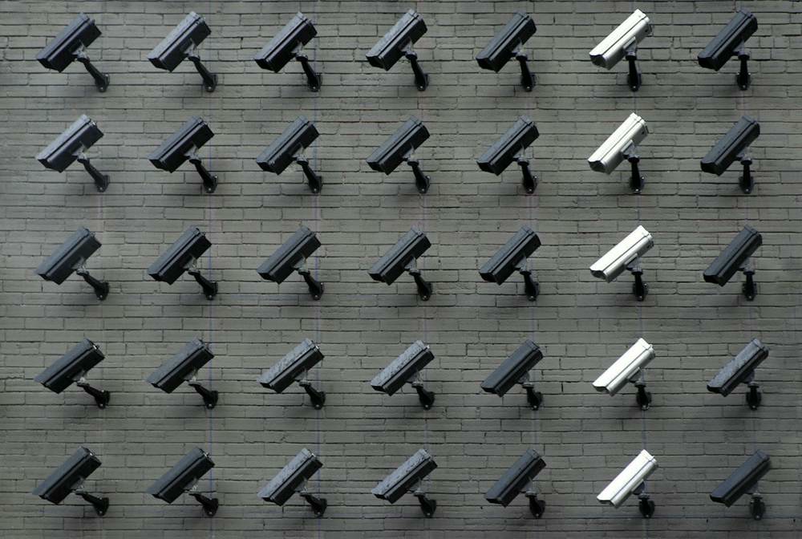
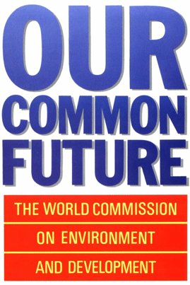

我想成為一位智慧城市規劃者，聚焦空間關係規劃、 公民社會與科技之間的張力（以人為本），以及 智慧管治（尤其跨部門協調不足）等課題。 我會透過研究、調查與技術創新回應這些問題，並賦權市民在 資訊、參與、管治三個層次共建理想城市。
智慧城市是否真能提升生活質素？
本身值得質疑，非技術一出現便等於進步。智慧燈柱作例子：一方面帶來數據與便利，另一方面涉及監控與隱私；重點在於以批判思維衡量取捨（trade-off）。

我的目的是研究智慧生活創新。
若智慧城市的目標是改善不同人群的生活，便須追問：誰負擔得起、誰真正受惠。非洲太陽能家庭系統（SHS）、開源輪椅等例子說明：當科技對準基本需要、可負擔且可共享，才更能改變弱勢群體的生活；這亦是個人對「智慧生活」之接收與取態的核心。
